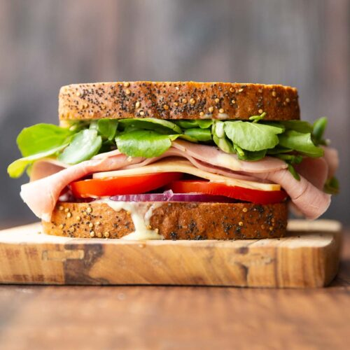

Fish finger sandwich recipe

Description
The popular food so far and loved by everyone. Easy and fast to make. Do you have any option what it could be?
You're right it's a sandwich! We know it's obvious to cook that great piece of food. And still... We've got a recipe that will blow your mind! Scroll down and find out!
Ingredients
- 4 fish fingers
- butter, softened, for spreading (optional)
- 2 slices white bread
- ½ tbsp tomato ketchup
- ½ gherkin, sliced
- handful of shredded lettuce
For the tartare sauce
- 1 tbsp mayo
- 1 tsp capers, chopped
- squeeze of lemon juice
- 2 tsp chopped parsley/li>
- ½ gherkin, finely chopped
Steps
- Cook the fish fingers following pack instructions. Meanwhile, combine all the tartare sauce ingredients in a bowl and set aside.
- Butter the bread (or you can leave the butter out, if you prefer), then spread the tartare sauce over one slice of bread and the ketchup over the other. Lay the fish fingers on top of the tartare sauce, then put the sliced gherkins on top, followed by the lettuce. Top with the other slice of bread, cut in half and serve.